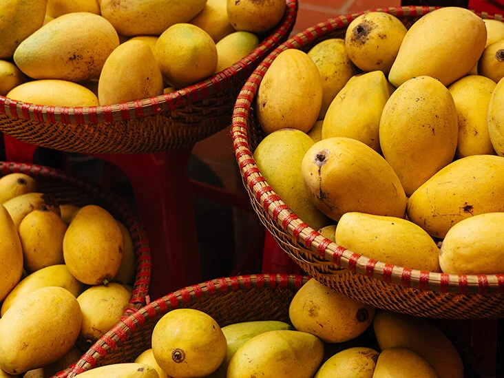

Mango


- Mangoes have unique nutritional and medicinal qualities which makes it very beneficial. It is a rich source of vitamins A and C. In addition to having a beautiful shape and appearance, the taste of mango is very delicious.
Similarly, mango in ripe form is highly energizing and fattening according to nutritional experts. What’s interesting is that we can use every part of the mango from its root to top in a lot of ways.
Even in its various stages of growth, we use it in a lot of ways. For instance, we use it for extracting tannin in its raw stage. Similarly, we also use it to make chutneys, curries and pickles in this stage.
Further, we also use it to make tasty squashes, jams, juices, jellies, nectars, syrups and more. Mango also comes in a can in slice and pulp form which is ready to use. Moreover, we also use the inside kernel of the stone of the mango as a source of food.
My Favourite Fruit
Mango is my favourite fruit of all times. I love eating mangoes because they are sweet and pulpy. My favourite part about eating mangoes is when we eat it with our hands and even though it becomes a mess, it is always worth it.
Moreover, the memories I have with this fruit makes it even more special. During my summer break, we visit my village along with the whole family. Thus, during the hot summer afternoons, my family sits beneath the tree together.
We take out mangoes from a bucket of cold water and sit down to savour them. Looking back at how much fun we used to have makes me extremely happy. Thus, I always get nostalgic when eating mangoes.
As a result, it brings good memories and happiness in my life. I love eating all varieties of mangoes. When we look back at the pre-historic existence of this fruit in India, we find that it has been around for many centuries.
As a result, a lot of varieties of mangoes are available. For instance, Alphonso, Kesar, Dasheri, Chausa, Badami and more. Thus, whatever the shape and size, I truly relish the king of fruits.